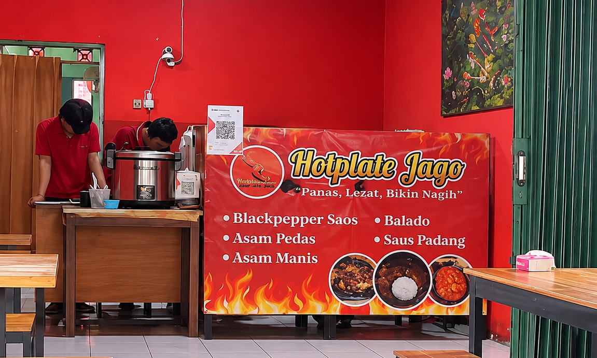

Tentang Kami
Kuliner Hotplate
Hotplate Jago merupakan UMKM kuliner yang menyajikan sensasi makan berbeda dengan menggunakan hotplate (piring panas). Berlokasi di Jalan Selokan Mataram, Sleman, Yogyakarta, kami menghadirkan berbagai hidangan yang disajikan langsung mendesis di atas meja, menjaga makanan tetap hangat dan lezat hingga suapan terakhir.
Dikelola secara profesional oleh satu pemilik dan 3 karyawan, Hotplate Jago berkomitmen menyajikan hidangan berkualitas dengan bahan baku segar. Sebagai bentuk kenyamanan pelanggan, kami juga menyediakan fasilitas free refill nasi (self-service) sepuasnya.
Menawarkan lebih dari 15 pilihan menu mulai dari Hotplate Seafood, Daging Sapi, Fuyunghai, Sapo Tofu, hingga Capcay, dengan kisaran harga yang sangat terjangkau, mulai dari Rp13.000 hingga Rp32.000 per porsi.

Visi & Misi
Visi
“Menjadi UMKM kuliner hotplate favorit di Yogyakarta yang selalu mengutamakan kualitas rasa dan kepuasan pelanggan.”
Misi
“Menyajikan makanan dengan bahan baku segar, pelayanan yang ramah, serta harga yang terjangkau bagi seluruh lapisan masyarakat.”
Mengapa Memilih Kami?
Selalu Hangat
Disajikan menggunakan hotplate sehingga makanan tetap panas dan lezat saat disantap.
Free Refill Nasi
Fasilitas isi ulang nasi sepuasnya (self-service) untuk memuaskan pelanggan.
Harga Terjangkau
Menawarkan berbagai pilihan menu dengan harga mulai dari Rp13.000 hingga Rp32.000.